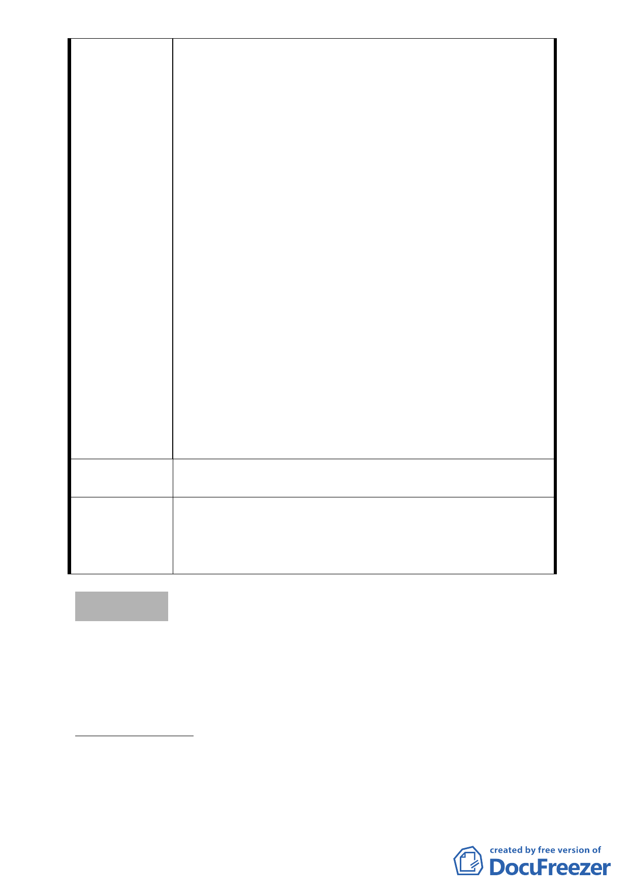

移入上限，勢必造成開 發 案 財 務 上 的 重 大 損
失。
3、且查「臺北市土地使用分區管制規則第八十條
之四」明定大眾運輸系統之車站半徑500公尺
範圍內地區，其容積率得酌予提高百分之三
十；「臺北市都市計畫容積移轉審查許可條件」
亦明定大眾捷運場站出入口半徑500公尺範圍
內面臨八公尺以上已開闢計畫道路者，為私有
未徵收公共設施保留地之接受基地。故本市既
定政策係採行引導大眾運輸系統場站周邊緊
湊發展之「大眾運輸導向」模式，將來信義計
畫區南、北兩條聯外捷運加上區內輕軌電車，
應允許適度提高發展密度，較為合理。
二、建議宜改由加速建構完善的大眾運輸系統著
手，較能有效改善本地區交通問題：
1、查本地區除北側已通車之捷運南港線外，南側
施工中的捷運信義線預計於民國lO1年通車，
另有研議規劃中的輕軌電車計畫，未來大眾運
輸系統逐漸完善，應可引導減少私人運具旅
次，舒緩交通問題。
2、故建議儘速建構完善的大眾運輸網絡，引導使
用大眾運輸工具，較可改善本地區交通問題。
建議辦法
本會建議宜以交通部門策略解決本地區交通問
題，容積移入則維持現行規定。
本案計畫內容改採在相關法令規定之移入上限
委員會決議
下，本區容積實際可移入總量須經台北市都市設計
及土地使用開發許可審議委員會就個案基地條件
予以審查。
討論事項 四
案名：變更臺北市北投區新民段二小段 497-3、497-4、大業段一
小段 2-1、2-3、3-6 地號人行步道用地及特定觀光商業專
用區為廣場用地計畫案
案情概要說明：
一、臺北市政府擬於捷運新北投站北側臺北市聯合醫院北投門診
部現址，新建「臺北市政府觀光醫療暨健康保健中心」，為
一併改善周邊環境，爰辦理本次變更（市府以 99 年 3 月 29
- 16 -